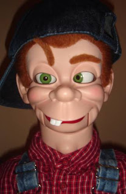

Billy Hill
4/6/2010
{kind=link}

Description:Here's a little guy with mixed animations! Built by Kevin Detweiler, he is a true "Hillbilly" from the Heartland of America. Kevin calls him "Billy Hill" -He is always turning things around and doing things backwards, so this "Hillbilly" becomes "Billy Hill"
A Ventriloquist Figure with a hollowbody, head turns full circle, tilts, nods, etc. Several things make him special. He is a standing ventriloquist figure. Thats right, he stands 30" tall. Who stands for fun? Billy does! Who stands for being different and a little wacky? Billy does! He doesn't sit on the job, he can't! You can turn legs and feet 360 degrees. Position them in any direction! You can have one forward and one backwards. Turn them in opposite direction or facing together. Lots of fun just with his legs and feet! He has wonderful flexible hands, made out of latex.
He has a lazy right eye. In it's normal position the eye looks toward his nose (see pic). Then you can rotate that eye to the opposite corner or you can stop it straight so both eyes look normal, but who wants to do that? Billy likes the odd look! He also crosses his eyes.
And then there are his "EYEBROWS". You can raise one or both. Of course, Billy Hill's eyebrows are different - they pivot from the inside and raise opposite of what your normal vent figures with eyebrows would do, but who wants to be normal? Not Billy! He's all dressed up from his cap to his sandals, ready to put a smile on faces all around. Billy wanted to say, "I'm Billy Hill and I'm not smarter than a 5th grader!" He's one of a kind! For sale on eBay.
Check him out here.